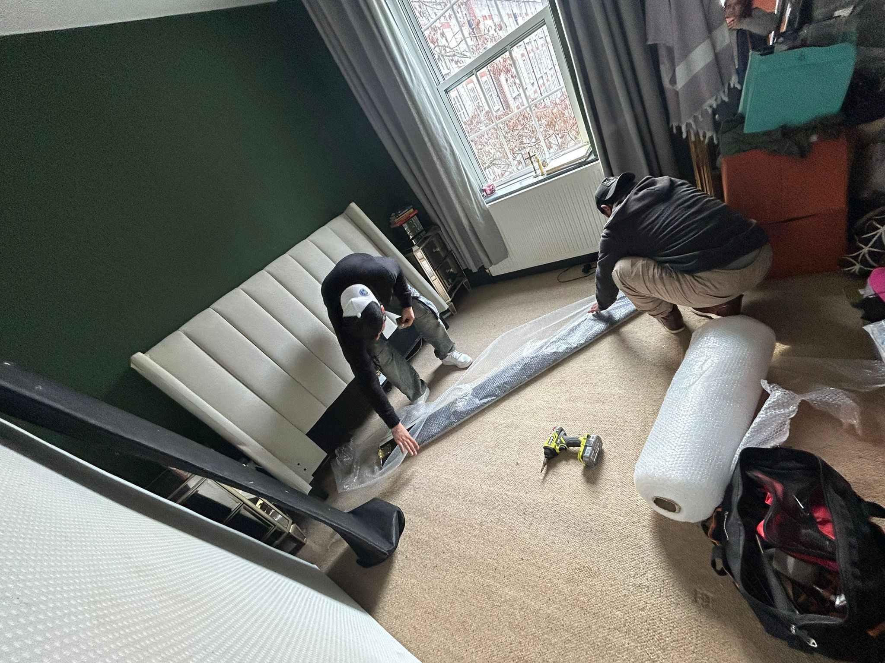
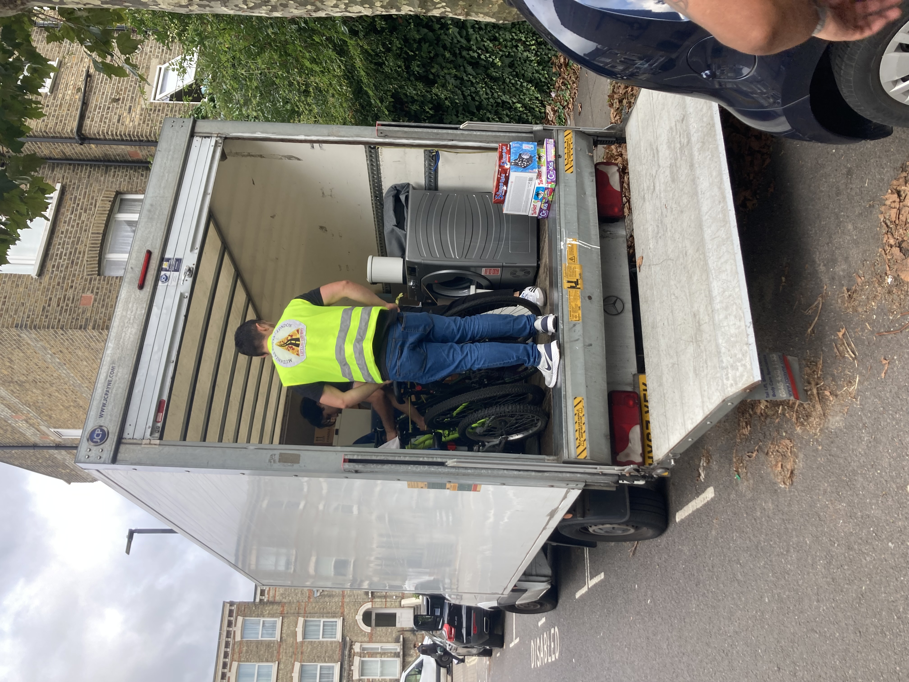
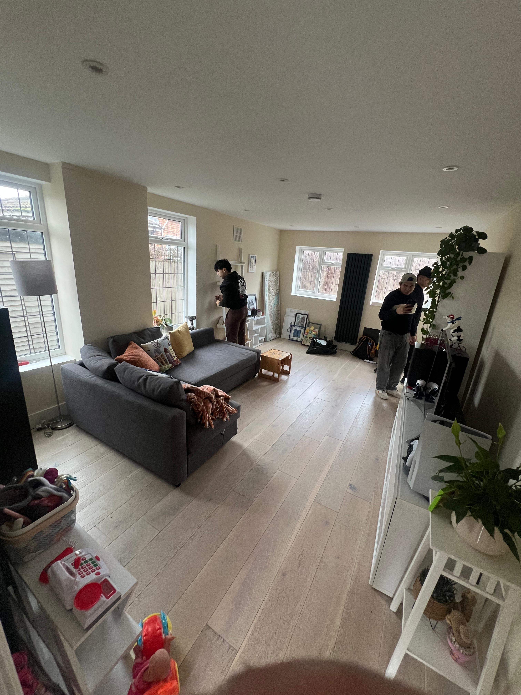

Removals Balham SW12
Our Balham service is designed as a complete relocation experience, not a basic van booking. We coordinate each stage with a structured process that removes uncertainty, keeps your day calm, and reduces stress from the first packed box to the final room setup. For a managed, start-to-finish plan, start on our contact page so we can align crew size, timing and access with your property.
If your move is compact, local within SW12, and easy to describe (for example a few rooms or a straightforward man-and-van job), you can often begin faster with our instant quote calculator.
A Full-Service Approach for Balham Moves
Most people in Balham are balancing work, family logistics, tenancy deadlines, key collection times, and limited time to prepare. Even a short move can become exhausting when every detail sits on your shoulders. That is why our team approaches every relocation as a managed project. We do not just arrive, load, and leave. We build the move around sequence, access planning, and room-by-room delivery, so the entire process feels clear from the outset.
Our role is simple: we take responsibility for the practical workload. We prepare packing materials, protect fragile items, dismantle furniture where required, and handle safe transport with careful loading order. At the new property, we do more than drop boxes at the door. We position items in the correct rooms, reassemble furniture, and complete the setup so your home begins functioning quickly. For clients with tenancy handover obligations, we can also coordinate cleaning support to help you leave the previous property in good condition.
In short, we do not just move boxes, we manage the move. That difference is what makes the day calmer. It is also what helps families, professionals, and landlords avoid costly last-minute issues when timing is tight.
Not every relocation needs the same depth of planning. If you are moving a smaller load with clear access and a simple inventory, the instant quote calculator is often the quickest way to check availability and ballpark pricing before you confirm details by phone or message.
Your Structured 3-Day Moving Process
Day 1 - Packing & Disassembly
The first day is about preparation and protection. We begin with careful packing across priority rooms, using a methodical order that keeps essentials separate from non-urgent items. Fragile belongings receive additional wrapping and clear labelling so they can be handled correctly at every stage. Where furniture is oversized or difficult to move safely, we dismantle it with care and keep fittings organised, ready for straightforward reassembly later.
This day sets the tone for the rest of the move. By the end of Day 1, your home is fully prepared for transport with minimal disruption and no rushed decisions. Instead of a chaotic final evening, you have clarity about what is packed, what remains accessible, and exactly what happens next.

Day 2 - Transport & Essential Setup
Day 2 focuses on smooth movement and immediate comfort. We load using a planned sequence, transport your items carefully, and unload with room-by-room placement rather than temporary dumping. At this stage we prioritise essential setup, including key furniture assembly such as the bed, so your first evening in the new property feels settled and practical.
For many clients, this is the most important emotional turning point. A well-run second day means you can rest properly, locate essentials easily, and avoid the stress of sleeping among unopened boxes. We make sure the property is liveable first, then continue with full completion on Day 3.

Day 3 - Unpacking, Full Assembly & Installation
The final day is dedicated to completion. We unpack in a structured way, organise rooms according to your preferred layout, and complete remaining furniture assembly. Where requested, we can also handle appliance installation, including practical items such as washing machines and fridges, so your household routine can restart quickly.
We finish with detail: final positioning, practical checks, and the small adjustments that make a property feel like home. Rather than leaving you with a half-finished setup, we close the move properly. This is why our process feels reassuring. It is not hurried, and it is not partial. It is designed to be complete.

Services Delivered as One Coordinated Move
Every client has different priorities, but the goal is the same: everything handled for you with a clear process and consistent standard of care. Our service in SW12 is built around coordination, so each element supports the next and nothing is left as an afterthought.
House & Flat Removals in Balham
From compact flats to larger family homes, we plan your relocation around access, floor levels, building rules, and practical timing.
Man and Van Services
Ideal for smaller relocations that still require professional handling, disciplined loading, and reliable communication throughout. When the job is easy to scope, you can start with the instant quote calculator and we will confirm access and timing before the day.
Packing & Unpacking
Protective packing, room-by-room labelling, and guided unpacking that helps your new property become functional quickly and calmly.
Furniture Assembly & Disassembly
Beds, wardrobes, tables, and key home furniture dismantled and rebuilt correctly, with fittings managed carefully from start to finish.
End of Tenancy Cleaning
When your move includes landlord handover requirements, we can help coordinate cleaning so you leave the outgoing property ready.
If you are reviewing options beyond Balham, you can compare our wider process on the South West London removals page and service details on our services overview. Many clients also check how we handle similar moves in nearby areas such as Wandsworth, Tooting, Colliers Wood, Earlsfield, and Wimbledon before confirming dates.
Parking & Access in Balham: Why Planning Matters
Balham looks straightforward on a map, but moving day logistics can become difficult if parking and access are treated as a last-minute detail. SW12 includes multiple Controlled Parking Zones, including H3, H2, D3a, and D3b. These zones do not all operate in the same way. Some controls run through most of the day, while others are shorter commuter windows of around one hour. That variation matters because the same vehicle plan may work on one street and fail on another only a few minutes away.
Demand is especially high around Balham station and shopping areas, where turnover is constant and legal stopping options can disappear quickly. Bedford Hill is a practical example: visitor-only bays with one-hour limits can create pressure if loading takes longer than expected or if timing slips. New residential developments with permit-free conditions may restrict assumptions about where vans can wait, while estate locations can involve separate permit systems that differ from street controls nearby.
There are also strict restrictions that leave little room for error. Dropped kerbs are enforced around the clock, so temporary stopping there is not an option. School streets near Alderbrook Primary and St Anselm's can restrict vehicle movement at specific times, and ANPR enforcement means compliance is monitored automatically. On the A24, Red Route sections impose no-stopping rules that are easy to underestimate if route planning is rushed. Even off-street options around Waitrose and Sainsbury's are limited and cannot be relied on as a guaranteed loading solution for a full relocation.
This is exactly why we plan access in advance rather than improvising on the day. We review restrictions, identify workable loading positions, and sequence tasks to match permitted times. When needed, we guide clients on permit steps early enough to avoid delays. Good planning protects your schedule, your budget, and your peace of mind. It also helps maintain a calm working pace for the team, which improves handling quality and keeps your move controlled from beginning to end.
If your move is relatively light and you already know your addresses and rough timings, you can still use the instant quote calculator as a first step; we will then sanity-check parking and access before we lock anything in.
Why Clients in Balham Choose Us
Trust is built through consistent outcomes, not promises. Our reputation is supported by 100+ five-star reviews on Google and 45+ five-star reviews on Facebook, with strong feedback across multiple platforms about professionalism, care, and respectful handling of homes and belongings. Clients regularly mention the difference that structure makes: clear communication before moving day, organised execution during the move, and proper completion after arrival.
We are often chosen by people who want more than basic transport. They want a move that protects their time, reduces decision fatigue, and avoids the uncertainty that comes with fragmented services. Our team works with a defined process, attention to detail, and practical experience across busy South West London streets. That local operational experience matters when access is tight, building rules are specific, and schedules are non-negotiable.
The result is a stress-free process that feels measured rather than rushed. You know what happens first, what happens next, and who is handling each part. For clients moving within or from SW12, that level of control is often the deciding factor.
Whether you need the full managed route or a simpler same-day style job, you can begin with the instant quote tool when the scope is clear, or reach out on our contact page when you prefer a conversation first.
We handle your entire move.
From packing and disassembly to transport, setup, and final completion, our team manages each stage so you can focus on settling in.
For full-service and multi-day plans, message us through the contact page so we can match crew, materials and schedule to your property.
For smaller or straightforward moves with clear access, use the instant quote calculator to check pricing quickly, then we confirm the details with you before moving day.
Frequently Asked Questions
Do you handle full packing in Balham?
Yes. We provide full packing with protective materials, structured labelling, and preparation designed for safe transport and efficient unpacking. Larger packing-and-setup projects are usually scoped via our contact page; for lighter jobs you can still open with the instant quote calculator and we will advise if more detail is needed.
Can you assemble furniture?
Yes. We dismantle furniture before transport where needed and reassemble it at the new property, including priority items needed on the first night.
Do you manage parking restrictions?
Yes. We plan around Balham access constraints in advance, including CPZ timing, permit considerations, and loading practicality for your specific address.
Can you help prepare property for landlord?
Yes. If your move includes tenancy handover, we can coordinate end-of-tenancy cleaning support so the outgoing property is ready for return.